OS TRÊS PRINCIPAIS RECURSOS DA FOTOGRAFIA MODERNA
Aprenda de uma vez por todas os conceitos mais básicos para tirar as fotos perfeitas que você tanto deseja! Nessa página nós veremos conceitos básicos sobre abertura, velocidade e Iso. Embora esses sejam os 3 conceitos principais, vamos ver algo a respeito de uma configuração mais básica, chamada exposição, que é o que nossos próprios olhos fazem ao dar de encontro com a luz!
ENTENDENDO A EXPOSIÇÃO
Exposição se refere a quantia de luz que entra no sensor de sua câmera. Basicamente é o quanto sua fotos ficarão escura ou clara, ou seja, ela que define o quão claro ou escuro as fotos ficarão.
Exemplo: se o resultado da imagem estiver muito claro é porque a imagem foi superexposta, ou seja, "muita luz".
EXPOSIÇÃO NA PRÁTICA
Veremos três exemplos de exposição nas imagens abaixo:
SUBEXPOSIÇÃO

Perceba que na imagem acima, a fotografia sai escurecida, porque a exposição utilizada foi muito baixa.
SUPEREXPOSIÇÃO

Já nessa fotografia, a imagem sai "estourada". Isso acontece porque a exposição utilizada foi muito alta.
EXPOSIÇÃO CORRETA
Em tese, a foto acima estaria com a exposição correta, onde você pode ver com clareza todos os detalhes da imagem.